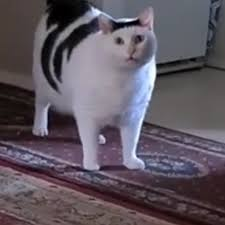

Sonhos ao Luar
No meio da noite, sob a luz suave da lua cheia, um menino empina sua pipa contra o céu estrelado...
Sonhos e Esperança
Os gatos são os verdadeiros reis da internet, e os memes são seu trono! De felinos fofos a travessos, eles nos fazem rir com suas travessuras inesperadas. Quem nunca se encantou com o "Gato Sorridente" ou riu do "Gato Rabugento"? Cada foto e vídeo capturam a essência única desses peludos: curiosos, espertos e sempre prontos para roubar a cena. Com suas carinhas expressivas e atitudes hilárias, os gatos são a prova viva de que a vida é muito mais divertida com um toque felino!